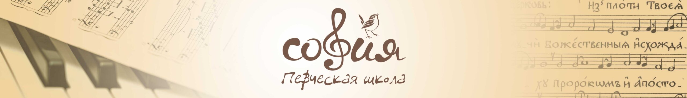

Раздел с ДЗ потерял свою актуальность, поэтому закрылся :)
Актуально сегодня:
-
- 23.01 сдача партий ирмосов соборования и "Во Царствии"
Пояснение разделов:
- аудио - здесь собраны аудиозаписи партий, которые нам записали преподаватели
- тексты/ноты - тексты и ноты большинства того, что мы разучиваем. Прошу обратить внимание, что в мелочах есть расхождения с распечатками, которые дают на уроках
- азбука - раздел с азбукой осмогласия (учебником) и не только
- сольфеджио - теория, которую нам дают на сольфеджио, плюс пара учебников
- пианино - ссылка на сайт с онлайн пианино, которым можно пользоваться с компьютера